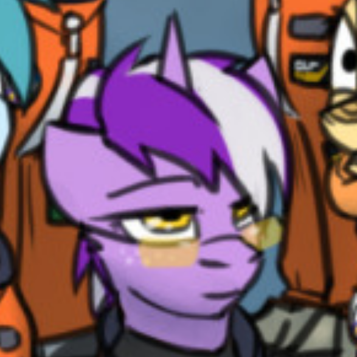

Concorde
 Equestria
EquestriaRosetta (astronaut)
Rosetta (born March 7, 1997) is a unicorn astronomer and captain of the Stardust 21 mission, known for her expertise in astrophysics and her initiative in the MIDST repair project.
Background
Rosetta was born in Hoofington, Equestria, a historic city known for its academic institutions. Excelling in the sciences from a young age, she went on to earn five PhDs in astrophysics, engineering, and space sciences. She began her professional career at the Friendship Observatory in Kwadube, where she focused on deep-space phenomena and interstellar mapping.
Her work on distant star systems led her to propose the MIDST (Multi-Imaging Deep Space Telescope) refurbishment project, which would later lead to her being designated as captain for the Stardust 21 mission.
Stardust 21
Selected in 2043 as captain of the Stardust 21 mission, Rosetta is responsible for leading the team in repairing and upgrading the MIDST telescope. Her leadership is critical for achieving the mission objectives, which aim to extend the telescope's capabilities for high-resolution imaging of distant cosmic bodies.
Personnal life
Outside of her demanding career, Rosetta is a mother to one child, with whom she shares her passion for science. Known for her dedication and privacy, she maintains a low profile outside of her professional circle but is widely respected among her colleagues.